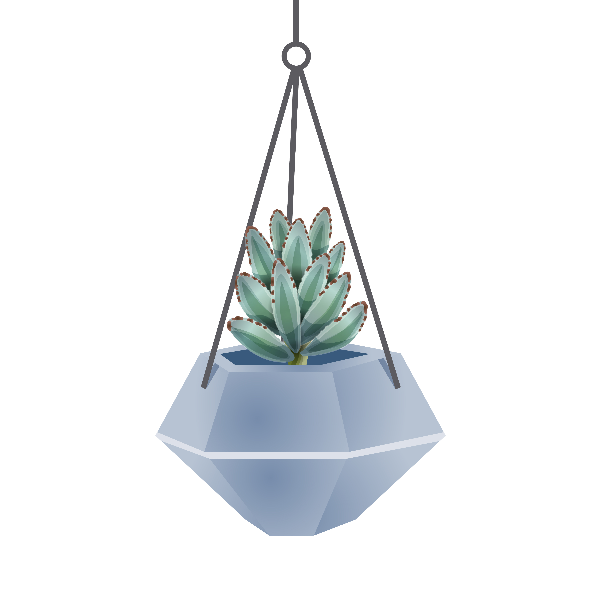

<app-shared-menu></app-shared-menu>
<!-- <app-shared-carga></app-shared-carga> -->
<section class="historial">
    <h1>Historial</h1> 
    <div class="graficas">
        <div class="grafica1">
            <canvas baseChart
                [datasets]="barChartData"
                [labels]="barChartLabels"
                [type]="'line'"
                [options]="barChartOptions">
            </canvas>
        </div> 
    </div>
    <div class="img-planta">
      
    </div>
    <!-- <div class="show-entries"> 
      <label>Entrada  </label>
      <select name="" id="" [(ngModel)]="pagesize">
          <option value="3">3</option>
          <option value="5">5</option>
          <option value="10">10</option>
      </select>
    </div> -->
    <div class="tabla">
        <table class="table table-bordered">
            <thead>
              <tr>
                <th scope="col">Fecha</th>
                <th scope="col">Humedad</th>
                <th scope="col">Temperatura C°</th>
                <th scope="col">Temperatura F°</th>
                <th scope="col">Humedad del suelo</th>
                <th scope="col">Tipo planta</th>
              </tr>
            </thead>
            <tbody>
              <tr *ngFor="let sensor of listSensor | paginate: { itemsPerPage: 5, currentPage: p}">
                <td>{{sensor.fecha | date:'yyyy-MM-dd   h:mm a'}}</td>
                <td>{{sensor.sHumedad}}</td>
                <td>{{sensor.sTemperaturaC}}</td>
                <td>{{sensor.sTemperaturaF}}</td>
                <td>{{sensor.sHumedadS}}</td>
                <td>{{sensor.tipoPlanta.tipoPlanta}}</td>
              </tr>
            </tbody>
          </table>
          <pagination-controls (pageChange)="handlePageChange($event)"
          previousLabel="Ant"
          nextLabel="Sig"></pagination-controls>
    </div>
</section>

